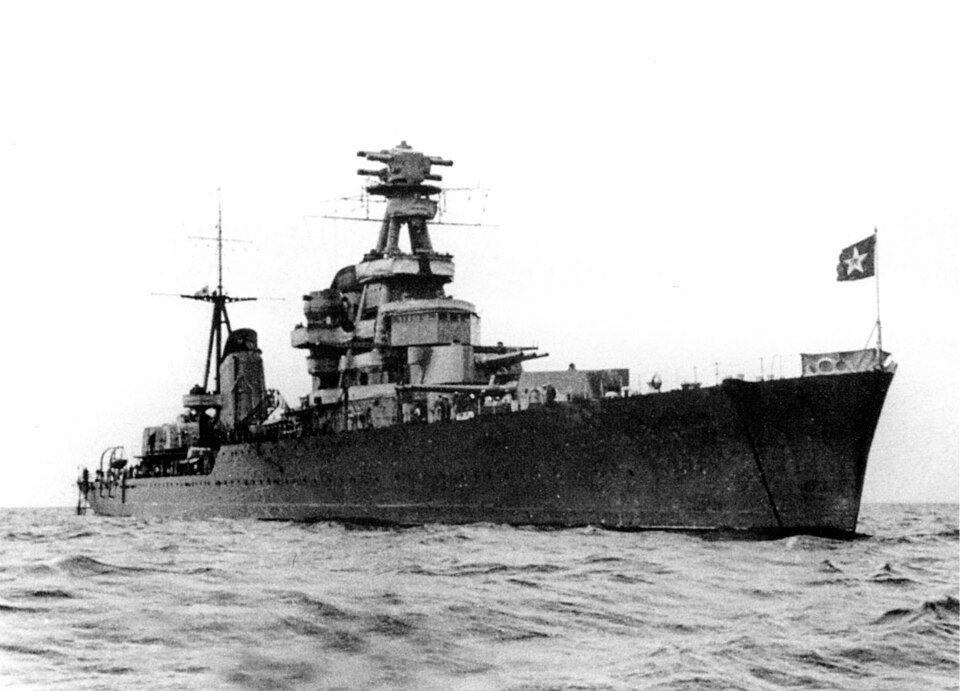

Kirov
Crucero de Unión Soviética, perteneciente a la clase Kirov · Proyecto 26. Encabezó el Proyecto 26, que incorporó influencia técnica italiana.

Diseño y función
Kirov pertenecía a la clase Kirov · Proyecto 26. Crucero de flota y apoyo artillero. Sus prestaciones se detallan en la tabla técnica, con las fechas o condiciones disponibles en la referencia.
Operaciones y trayectoria
Encabezó el Proyecto 26, que incorporó influencia técnica italiana. Operó en el Báltico, participó en la guerra de Invierno y prestó apoyo artillero durante la defensa de Leningrado.
Destino final y conservación
Sobrevivió a la guerra y continuó en servicio soviético; fue retirado y desguazado en la década de 1970.